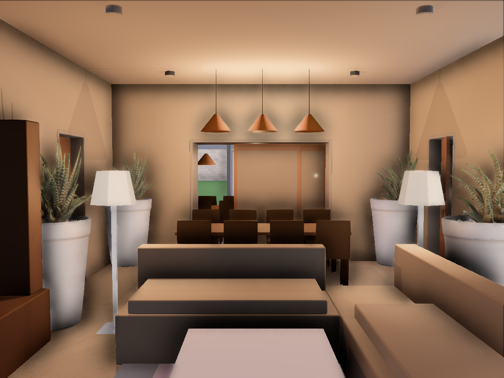
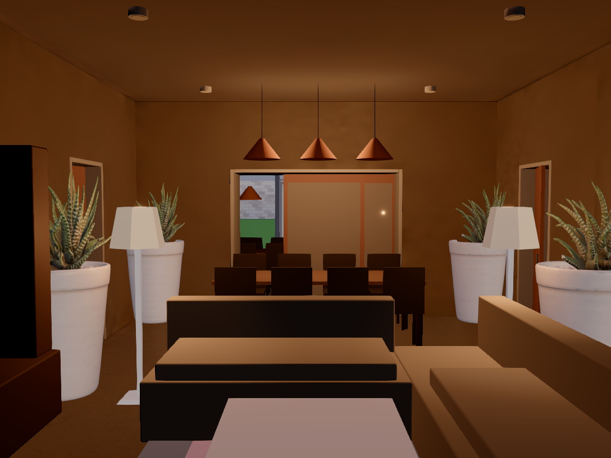
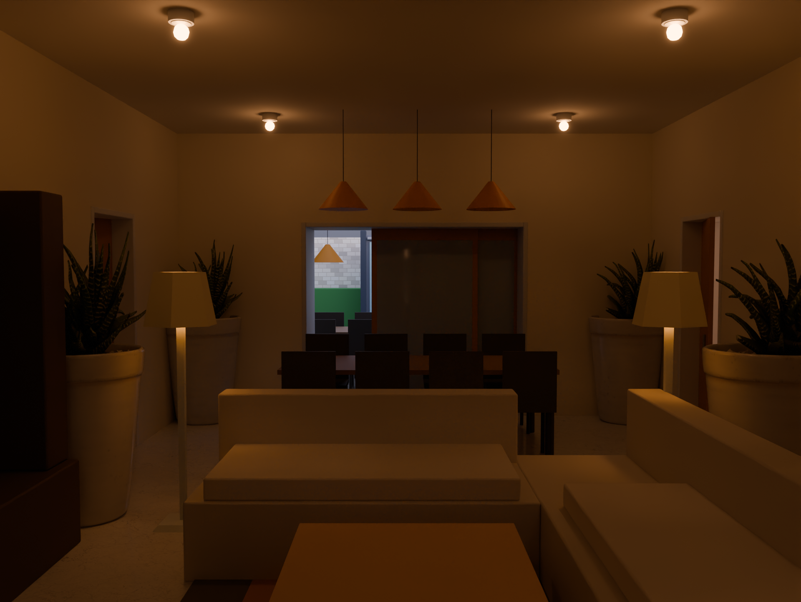
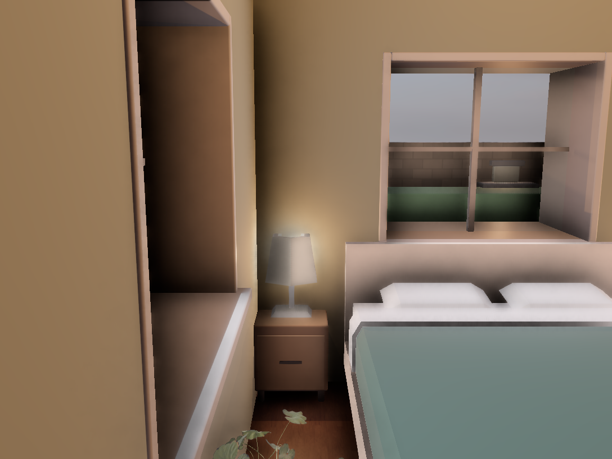
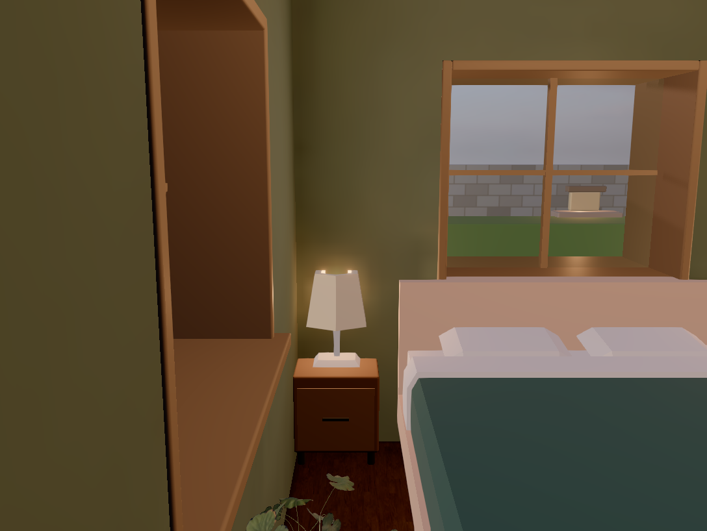
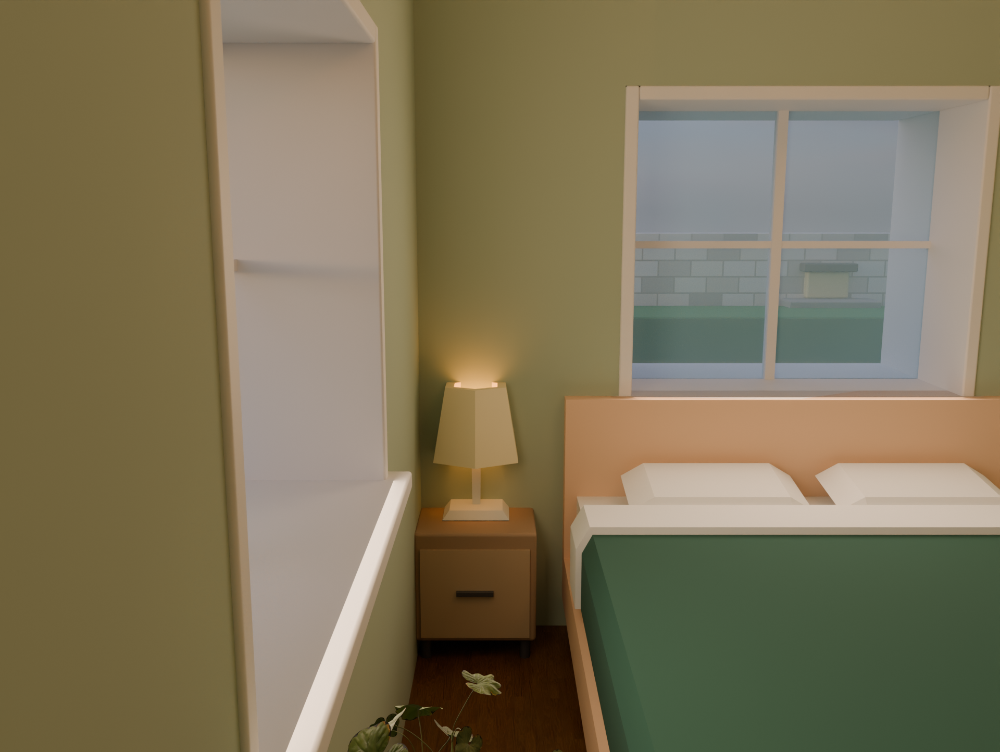
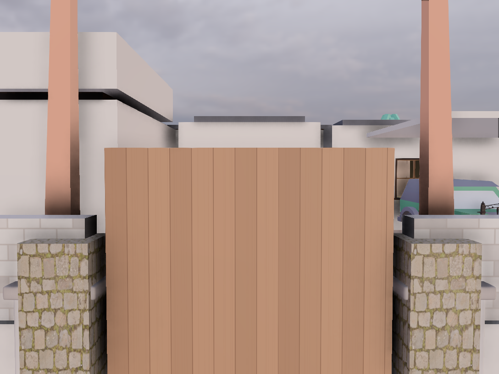
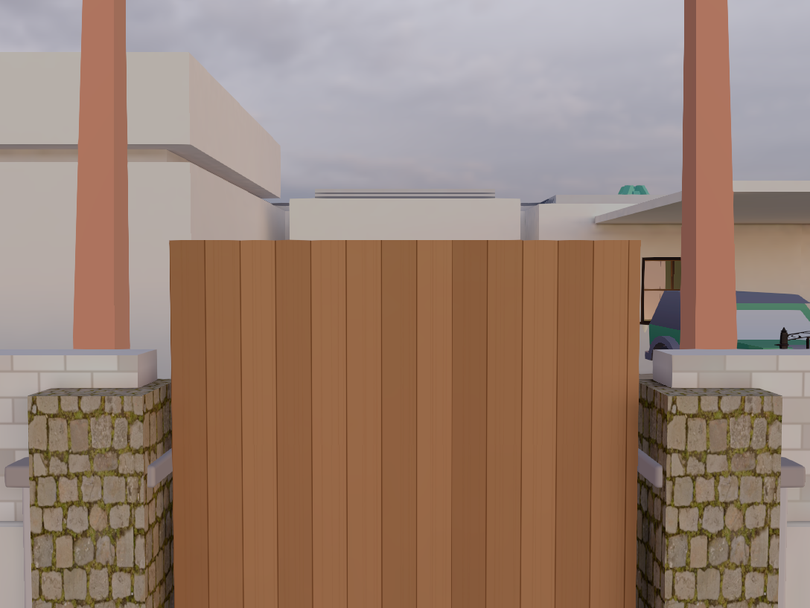
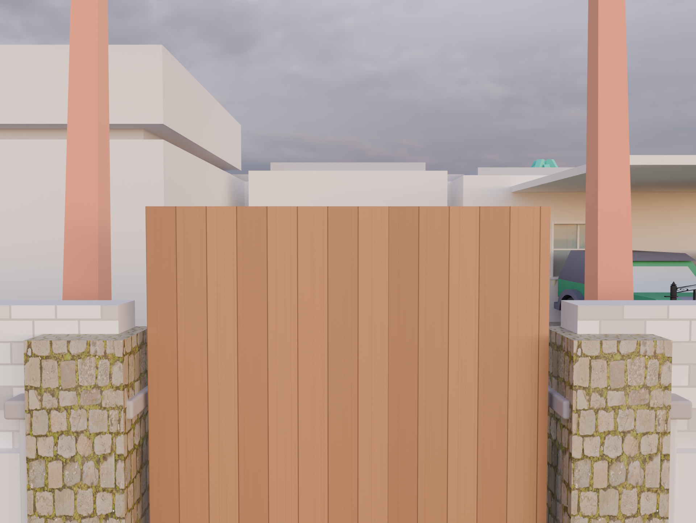

Left: real-time lighting (what the walkthrough looked like before). Middle: the walkthrough with the Dusk lighting bake
(Medium, Blender Cycles). Right: the Studio render (Blender, Standard quality) from exactly the same camera.
Made by npm run test:gpu (e2e-gpu/bake.gpu.spec.ts).
| Real-time | Baked | Studio render | |
|---|---|---|---|
| Living room |  |  |  |
| Master bedroom |  |  |  |
| Front gate |  |  |  |